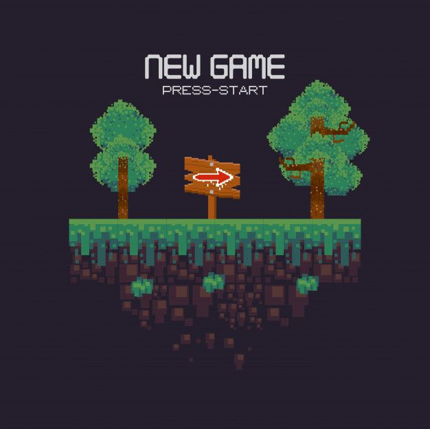

Este hobby tiene menos de 3 años, sin embargo se ha
convertido en uno de los mas importantes de mi vida, cambiando la rutina de esta y brindandome un
esquema diferente acerca de como es que funciona el mundo mediante esta
Todo empezó en la prepa donde empecé a programar por mi propia cuenta, me di cuenta que todo lo que
hacemos de manera automática en las redes sociales, sistemas escolares, aplicaciones, juegos, transferencias, fué
mediante la programación y me sorprendió que la mayoría de personas no sabe ni un poco de esta

Como lo mencione en la minibiografía, un videojuego fué la primera cosa que programe, me base en un tutorial
que vi y de ahí le agregue algunas cosas extra, aquí fué donde comprendí un poco de la estructura de un lenguaje
de programación.
 El primer lenguaje de programación que utilicé fué python, el lenguaje más utilizado actualmente
y que su lógica es muy fácil de comprender, con este aprendí condiciones y ciclos principalmente.Posteriormente en
segundo semestre aprendí c++, donde me sirvió para mejorar mi lógica e ingenio para resolver las cosas,
no importaba si me tardaba horas, yo era feliz resolviendo el problema, con c aprendí sobre todo arreglos
El primer lenguaje de programación que utilicé fué python, el lenguaje más utilizado actualmente
y que su lógica es muy fácil de comprender, con este aprendí condiciones y ciclos principalmente.Posteriormente en
segundo semestre aprendí c++, donde me sirvió para mejorar mi lógica e ingenio para resolver las cosas,
no importaba si me tardaba horas, yo era feliz resolviendo el problema, con c aprendí sobre todo arreglos

 Me da gusto que actualmente se me facilite aprender un lenguaje de programación, después de aprender lógica de c y
de python, pude entenderle a java, javascript, sql, php, html, css, lo cuál estoy agradecido y me sirve para un empleo
proximamente, para mi es un resolver resolver un problema que se plantee
Me da gusto que actualmente se me facilite aprender un lenguaje de programación, después de aprender lógica de c y
de python, pude entenderle a java, javascript, sql, php, html, css, lo cuál estoy agradecido y me sirve para un empleo
proximamente, para mi es un resolver resolver un problema que se plantee
 Honestamente tenía miedo de no poder comprender la programación, es algo que me apasiona y me iba a
decepcionar si no era una carrera para mi, sin embargo con el esfuerzo que hice y el
habito de investigar
por mi cuenta es que he logrado todo lo que llevo hasta el dia de hoy
Honestamente tenía miedo de no poder comprender la programación, es algo que me apasiona y me iba a
decepcionar si no era una carrera para mi, sin embargo con el esfuerzo que hice y el
habito de investigar
por mi cuenta es que he logrado todo lo que llevo hasta el dia de hoy